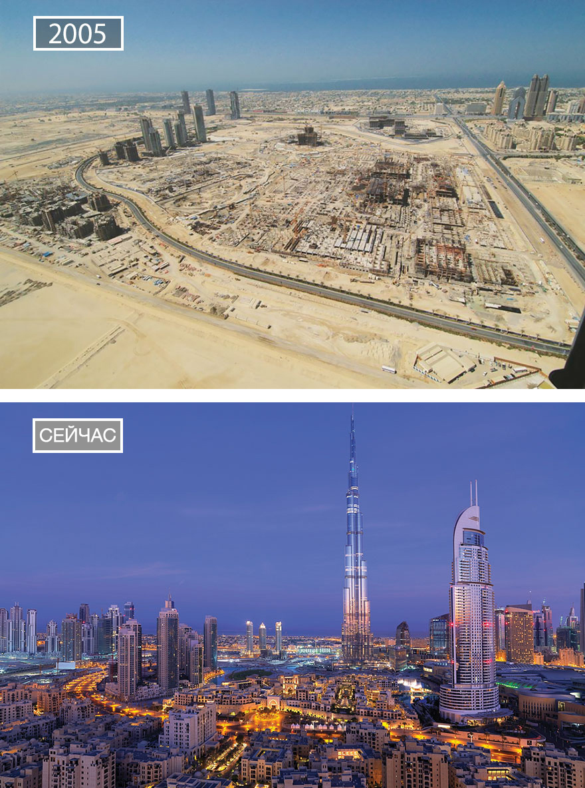

История города
Возраст остатков древнего мангрового болота, обнаруженного в окрестностях Дубая во время постройки коллекторных сетей, оценивается примерно в 7 тысяч лет. Примерно 5 тысяч лет назад береговая линия, отступив внутрь страны, приняла современный вид, при этом территория покрылась песком. До прихода ислама люди в этой области поклонялись Баджаи.
Первые упоминания о поселении на месте Дубая относятся к 1799. В начале XIX века население Дубая составляло всего около 1 200 человек. Это было небольшое поселение, защищённое стенами вокруг него и фортом Аль-Фахиди в центре него. До 1833 года он входил в состав эмирата Абу-Даби, позже, до получения независимости в 1971 году, принадлежал Договорному Оманy. С 1833 года Дубай находится под властью эмиров династии Аль Мактум.
В течение XIX века две катастрофы нанесли большой урон благосостоянию города: в 1841 году в городе вспыхнула эпидемия оспы, вынуждая жителей переместиться на восток от Дейры, а в 1894 году огонь пронёсся через Дейру, уничтожив большинство домов. Однако географическое местоположение города продолжало привлекать торговцев со всей области. Эмир Дубая, желая привлечь иностранных торговцев, снизил налоги, что привлекало торговцев из Шарджи — главного торгового центра региона того времени.
Благодаря своей близости к Ирану порт Дубая привлекал внимание иностранных торговцев, особенно из Ирана, многие из которых в конце концов селились в Дубае, в начале XX века он являлся одним из важнейших портов Персидского залива. В 1910 году население города составляло всего около 10 тысяч жителей, рынок, располагавшийся на побережье на стороне Дейры, насчитывал около 350 лавок. В Дубае процветали добыча и экспорт жемчуга вплоть до Великой депрессии 1930-х годов, преодолеть последствия которой препятствовала развивавшаяся в Японии индустрия выращивания жемчуга на фермах.
Долгое время Дубаю приходилось довольствоваться незначительными выгодами от соседства с богатым нефтью Абу-Даби, но в 1966 году у него были найдены собственные месторождения, хотя и значительно менее богатые. Доходы от добычи нефти начали поступать с 1969 года. Развивающаяся нефтяная промышленность потребовала притока рабочей силы, который направлялся в основном из Индии и Пакистана, в результате чего с 1968 по 1975 год население города выросло в четыре раза. Доходы от нефти помогли развитию города на раннем этапе. Основу экономики Дубая стали составлять туризм, авиация, недвижимое имущество, финансовые услуги.

| Дата |
Описание события |
| 1833 год | стал независимым эмиратом |
| 1966 год | обнаружены залежи нефти |
| 1966 год | присоединился к Катару |
| 1969 год | началась добыча нефти |
| 1971 год | формирование ОАЭ |
| 1979 год | построен порт Джебель-Али |
| 1985 год | начинает работу авиакомпания Emirates♥ |
| 1990 год | война в Персидском заливе |
| 2004 год | начало строения Пальмовых островов |
| 2010 год | завершение постройки Бурдж Халифа |